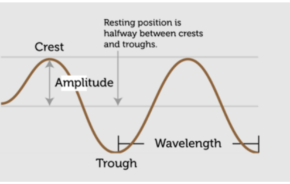
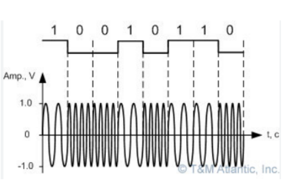

Modulation allows for a continuous wave (CW) to carry intelligence (comms and data). A waveform can be interrupted so that the wave becomes a series of pulses.
In RF comms, modulation is the process of carrying a message signal inside another signal that can be physically transmitted. A message signal can be a digital bit stream, or an analog audio signal. For RF comms to happen, a signal must be modulated so Sailors can communicate, sending/receiving info to each other thru SATCOM.
Demodulation is the opposite of modulation. Demodulation extracts the original information-bearing signal from a modulated carrier wave. Remember: a modulated signal carries intelligence in a series of pulses. That information needs to be extracted and understood by the receiving equipment.
The three characteristics of a signal.
When you think about amplitude think about intensity, strength, or volume. The amplitude of a wave is the distance between the high and low points on a signal or waveform.

When you think about frequency, think about the number of occurrences of the same event during a time period.
When you think about phase, think about time. More specifically, the fraction of the time a signal requires to complete a full cycle.
The purpose of carrier waves is to transmit info through space as an electromagnetic wave. A carrier wave also allows several carriers at different frequencies to share a physical transmission medium.
Modulation is a process in which a modulator changes some attribute of a higher-frequency carrier signal to carry information. A transmitter sends a carrier signal through the communication medium and a receiver demodulates the signal.
When the amplitude of a high-frequency (HF) carrier wave is changed in accordance with the intensity of the signal, it is called amplitude modulation. Two major disadvantages:
Frequency modulation is a process in which carrier wave frequency is varied. An FM signal should remain constant in amplitude and change only in frequency.
Form of modulation where phase of the carrier wave is varied in order to transmit the information. PM is not widely used for radio transmissions; it requires more advanced hardware and phase-change detection can be challenging.
In FSK, information is transmitted by shifting between two frequencies to represent 0s and 1s (binary). The 0 frequency is different from the 1 frequency. The Navy uses FSK with data circuits at a baud rate (signal speed) of just 75 bits per second (bps).

The phase of a carrier wave is varied between two states to represent 0s and 1s. This type of modulation is widely used in existing tech. The Navy uses PSK with data circuits and allows manual selection of baud rates (bpm) from 75–9600.
QAM combines two AM signals into a single channel. The two signals have the same frequency but the phase differs by 90 degrees. QAM is capable of high bandwidth speeds and is used for digital communication systems, radar systems, and single baseband modulators.
| Type | Full Name | What Changes? | Typical Use Case |
|---|---|---|---|
| AM / ASK | Amplitude (Shift Keying) | Signal Strength (Height) | AM Radio, basic digital on/off (OOK) |
| FM / FSK | Frequency (Shift Keying) | Speed of Cycles (Pitch) | FM Radio, simple paging, legacy modems |
| PM / PSK | Phase (Shift Keying) | Timing of the Cycle | Most SATCOM, GPS, Wi‑Fi |
In a modem the modulation process involves conversion of the digital signals to analog audio frequency (AF) tones. Digital highs are converted to a tone having a certain constant pitch. Digital lows are converted to a tone having a different constant pitch. These states alternate so rapidly that if you listen to the output of a modem, it sounds like a hiss/roar. The demodulation process converts the audio tones back into digital signals that a computer can understand directly.
RF modulators convert (modulate) separate audio/video signals (from a DVD or camera, for example) into VHF signals so you can view them on a TV.
Eb/No (Energy per bit over noise) is an informal indication of error rate for a digital communications system. As a Sailor you monitor comm systems to watch for increases in error rate while receiving comms. Some modems measure bit error rate (BER); others do not.
Jitter occurs when modulated signals are not synchronized. Jitter can cause a display monitor to flicker.
Clocks and data recovery are tightly linked in digital comms. Timing is important for sending and receiving digital communications.